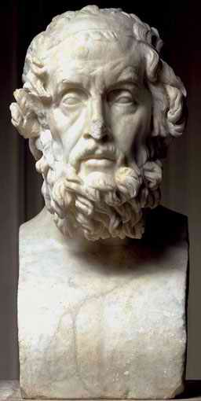

|
|
94 HOMER ± ABAD KE- 8 SM?
Berabad-abad lamanya
berlangsung pertentangan pendapat mengenai hak cipta
sajak-sajak Homer. Kapan, di mana, dan bagaimana Iliad dan
Odyssey dicipta?
Sampai seberapa jauh sajak itu bersandar pada komposisi
sebelumnya? Apakah Iliad dan Odyssey disusun oleh orang yang
sama? Betulkah salah satunya digubah oleh hanya satu
penulis? Mungkin tak ada orang seperti Homer dan kedua sajak
itu yang berkembang lewat proses penggabungan begitu lambat,
ataukah memang disusun oleh sekelompok pengolah yang
mencomotnya dari sebuah gabungan sajak-sajak yang ditulis
oleh banyak ragam penyair. Para sarjana yang membuang waktu
bertahun-tahun menyelidiki masalah ini tidak mencapai kata
sepakat satu sama lain; lantas bagaimana bisa seseorang yang
bukan sarjana ilmu klasik bisa tahu jawab yang semestinya?
Tentu, saya sendiri tidak tahu jawabannya; meski begitu,
untuk menentukan di mana Homer layak ditempatkan di daftar
urutan buku ini, saya membuat perkiraan sebagai berikut.
Perkiraan pertama adalah, memang benar ada seorang
penulis utama Iliad. (Alasannya, terlampau bagus jika karya
itu disusun oleh sekelompok orang!). Pada abad-abad sebelum
Homer, banyak sajak-sajak yang lebih pendek mengenai masalah
yang sama digubah oleh penyair-penyair Yunani lain, dan
Homer banyak mengambilnya dari karya mereka. Tetapi, Homer
berbuat lebih jauh dari sekedar merakit Iliad dari
sajak-sajak pendek yang sudah ada sebelumnya. Dia memilih,
dia mengatur, dia menyempurnakan kata-kata dan menambahnya
serta pada akhirnya melengkapinya menjadi hasil final dengan
bakat sastranya yang genius. Homer, orang yang menghasilkan
karya besar itu, mungkin hidup di abad ke-8 SM meski banyak
catatan menganggap lebih awal dari itu. Saya juga
memperkirakan bahwa orang yang sama merupakan penulis utama
Odyssey. Meski argumen (berdasar sebagiannya dari perbedaan
gaya) bahwa kedua sajak digubah oleh penulis-penulis yang
berbeda punya kekuatan yang setara, secara keseluruhan
persamaan diantara kedua sajak jauh lebih penting daripada
perbedaan-perbedaannya.
Dari apa yang sudah dipaparkan, jelaslah sudah betapa
sedikitnya bisa diketahui tentang ihwal Homer sendiri; dan
memang tidak ada data biografis mengenai dirinya. Ada
tradisi kuno yang teramat kokoh, berasal dari masa awal-awal
Yunani, bahwa Homer itu buta. Tetapi, kehebatan yang tampak
secara visual dari kedua sajak itu menunjukkan andaikata toh
Homer itu buta, tidaklah butanya itu dibawa dari lahir.
Bahasa yang digunakan dalam sajak itu menunjukkan bahwa
Homer berasal dari Ionia, daerah sebelah timur laut
Aegea.
Kendati tampaknya sudah percaya bahwa begitu panjang dan
begitu cermat susunan suatu sajak dapat dicipta tanpa
tulisan, banyak kaum cerdik pandai agaknya sepakat bahwa
sajak-sajak itu paling sedikit bagian permulaannya dan
mungkin malah seluruhnya, merupakan komposisi oral (lisan).
Tidaklah pasti kapan sajak-sajak itu pertama kali tertuang
ke dalam tulisan. Mempertimbangkan segi panjangnya (secara
gabungan hampir berjumlah 28.000 bait), tampaknya agak sukar
terbayangkan sajak-sajak itu bisa dipindahkan dengan begitu
teliti kecuali jika ditulis dalam jangka waktu tidak begitu
lama sesudah penciptaan aslinya. Dalam suatu peristiwa,
menjelang abad ke-6 SM, kedua sajak itu sudah dianggap karya
klasik besar, dan informasi biografis menyangkut Homer sudah
hilang. Setelah itu, orang Yunani senantiasa menganggap
Odyssey dan Iliad merupakan hasil karya bangsa yang
terjunjung tinggi. Menariknya, sepanjang masa antara abad ke
abad dan semua perubahan dalam gaya yang sudah terjadi,
reputasi Homer tak pernah punah.
Ditilik dari ketenaran dan reputasi Homer yang tinggi,
dengan pikiran yang dag-dig-dug saya tempatkan Homer dalam
nomor urutan yang begitu rendah. Hal dan alasan serupa saya
lakukan pula terhadap umumnya tokoh-tokoh seni dan sastra.
Tempat urutan mereka dalam daftar ini, rendah. Dalam kasus
Homer, selisih beda antara reputasi dan pengaruh tampaknya
besar. Biarpun hasil karyanya sering dipelajari di sekolah,
di dunia dewasa ini sedikit sekali orang membaca Homer
begitu mereka meninggalkan bangku sekolah lanjutan atas atau
perguruan tinggi. Ini berlainan besar dengan Shakespeare
yang drama maupun sajak-sajaknya dibaca dan drama-dramanya
sering dipentaskan dengan mendapat pengunjung yang cukup
banyak. Walhasil, betul-betul beda.
Dan Homer pun tidaklah dikutip secara luas. Meskipun
kutipan Homer terdapat dalam karya Barlett, amat sedikit
digunakan dalam percakapan sehari-hari. Bukan saja berbeda
jauh dengan Shakespeare, juga berbeda jauh dengan
penulis-penulis seperti Benyamin Franklin atau Omar Khayyam.
Kalimat seperti "sen yang ditabung adalah sen yang didapat",
yang sering disebut orang, mungkin sebenarnya merupakan
pengaruh sikap pribadi seseorang, bahkan suatu sikap dan
keputusan yang berbau politik. Tak ada sangkut pautnya
dengan Homer apa yang banyak dikutip orang sekarang.
Kalau begitu halnya, apa sebab Homer dimasukkan dalam
daftar urutan buku ini? Ada dua alasan. Alasan pertama,
jumlah orang yang makin bertambah dari abad ke abad baik
yang mendengar atau membaca karya Homer memang betul-betul
banyak. Di dunia masa silam, sajak Homer jauh lebih populer
ketimbang sekarang. Di Yunani, karyanya begitu akrab dengan
penduduk umum, dan dalam masa yang panjang sekali
mempengaruhi sikap agama dan etika. Odyssey dan Iliad
terkenal bukan semata di kalangan sastrawan intelektual,
tetapi juga di kalangan militer dan pemuka-pemuka politik
juga. Banyak pemimpin Romawi lama mengutip Homer, malahan
Alexander Yang Agung mengempit salinan Iliad diketiaknya
selama bertempur. Bahkan kini, Homer merupakan penulis
pujaan di sementara sekolah, dan umumnya kita sudah baca
karyanya (paling tidak sebagian) selama di sekolah.
Bahkan lebih penting lagi, mungkin, pengaruh Homer
terhadap kesusasteraan. Semua penyair-penyair Yunani klasik
dan penulis-penulis drama amatlah sangat terpengaruh Homer.
Tokoh-tokoh seperti Sophocles, Euripides, dan Aristoteles
--menyebut beberapa contoh saja-- terbenam dalam tradisi
Homer, dan semuanya mengambil ide literatur yang cemerlang
darinya.
Pengaruh Homer terhadap para pengarang Romawi kuno jelas
besarnya. Semua menerima sajaknya sebagai ukuran
kesempurnaan. Tatkala Virgil --sering dianggap penulis
Romawi terbesar-- menulis karya besarnya Aeneid dia dengan
sadar dan atas keyakinan sendiri menyontoh kehebatan Iliad
dan Odyssey.
Bahkan di jaman modern pun, nyatanya tiap pengarang
penting dipengaruhi oleh Homer langsung atau oleh
penulis-penulis seperti Sophocles dan Virgil yang keduanya
amat terpengaruh oleh Homer. Tak ada penulis dalam sejarah
punya pengaruh begitu menyebar dan begitu berjangka
lama.
Masalah yang paling akhir adalah mungkin yang justru
ruwet. Selama seratus tahun terakhir ini, sangat mungkin
sekali Tolstoy lebih berpengaruh dan karyanya lebih banyak
dibaca orang ketimbang Homer. Tetapi Tolstoy tak punya
pengaruh apapun selama 26 abad, sedangkan pengaruh Homer
telah berlanjut selama 2700 tahun atau lebih. Ini
betul-betul masa yang teramat lama. Walhasil, Homer tak
mudah ditandingi oleh tokoh-tokoh literer lainnya, bahkan
oleh tokoh yang berkarya di bidang apa pun.
|